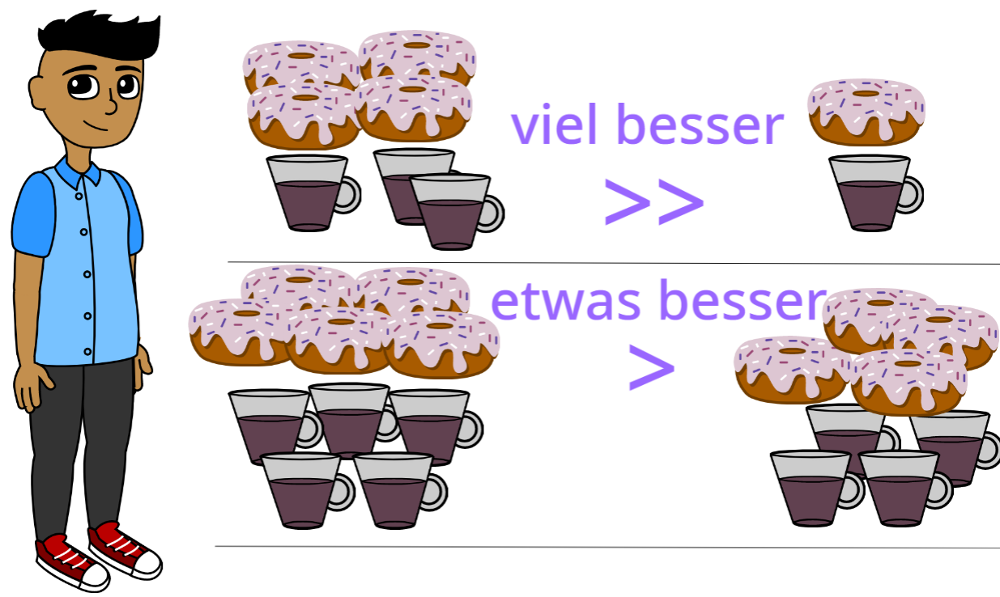
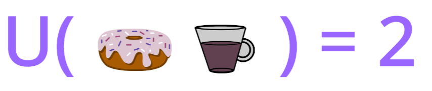
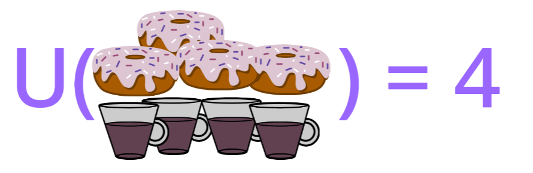

Wirtschaftsmathematik
Das ist der Skript für den Kurs Wirtschaftsmathematik. Die Unterlagen basieren auf den Skripten von Prof. Dr. Natalie Packham und Prof. Dr. Thomas Knispel. Weitere Mitwirkende sind Susanne Föhse-Hiltmann und Annika Weber. Datum: 2024-01-30
Kapitel 1 Einführung
Einige ermunternde Bemerkungen, bevor wir beginnen 🤓
Grundsätze zum Lernen von Mathe (basierend auf Jo Boaler von youcubed an der Stanford University):
- Jeder kann mit konsequenter Übung Mathematik lernen.
- Fehler sind wertvoll. Fehler lassen das Gehirn wachsen! Es ist gut, zu kämpfen und Fehler zu machen um sie dann zu vermeiden.
- Fragen sind wirklich wichtig. Stelle immer Fragen, beantworte immer Fragen. Frage dich: Warum macht das Sinn, ein Konzept/Thema in dieser Wiese zu betrachten?
- In der Mathematik geht es um Kreativität und Sinnstiftung. Mathematik ist ein sehr kreatives Fach, bei dem es im Kern darum geht, Muster zu visualisieren und Lösungswege zu schaffen, die andere sehen, diskutieren und kritisieren können.
- In der Mathematik geht es um Verbindungen und Kommunikation. Mathematik ist ein zusammenhängendes Fach und eine Form der Kommunikation. Mathematische Konstrukte kann man in verschiedenen Formen darstellen; z. B. Wörter, ein Bild, eine Grafik, eine Gleichung; und verlinken.
- Im Mathematikunterricht geht es um Lernen, nicht um Leistung. Mathematik ist ein Wachstumsfach. Das Lernen braucht Zeit und es kommt auf Anstrengung an.
Warum benötigen wir die Methoden der Wirtschaftsmathematik?
Warum Wirtschaftsmathe? Überleg dir ein Paar Beispiel, wo man Mathe braucht um ein reeles Problem zu lösen.
Eine generische Antwort 😄
Die Wirtschaftsmathematik soll uns in der Lage versetzen komplexe wirtschaftliche Fragestellungen mit mathematischen Methoden lösen.
Viele ökonomische Größen werden quantitativ erfasst (Preise, Mengen,…). Ökonomische Modelle erfassen die Beziehungen zwischen diesen Größen. Die Mathematik besitzt die Genauigkeit, Präzision und die Kapazität komplexe Systeme zu erfassen. Hier einige Beispiele, wie mathematische Modelle bei der Erklärung betriebswirtschaftlicher Zusammenhänge genutzt werden: Umsatzmaximierung, betriebliche Kennzahlen, Break-even-Point, Optimierung betrieblicher Abläufe in der Produktion und der Lagerhaltung.
Beispiel: Nutzenmaximierung
Eine mögliche Fragestellung ist:
Beispiel 1.1 (Nutzenmaximierung) Der Studierende Alex verzehrt gerne Donuts und Kaffee. Ein Donut kostet \(P_x = 2\) Euro. Eine Tasse Kaffee kostet \(P_y = 4\) Euro. Alex’ Budget für Donuts und Kaffee beträgt \(200\) Euro pro Monat.
Fragen:
Wie viele Donuts und wie viele Tassen Kaffee wird Alex optimalerweise konsumieren?
Falls Alex’ Budget steigt: Wofür wird er einen zusätzlichen Euro ausgeben?
Welchen Nutzen bringen ihm eine Budgetsteigerung um einen Euro/ ein zusätzlicher Donut/ eine zusätzliche Tasse Kaffee?
Um das Problem mathematisch zu beschreiben (und zu lösen!) brauchen wir:
- Eine Relation, die dafür sorgt, dass Alex sein Budget einhält \(\leadsto\) Budgetrestriktion.
- Ein Konzept, der den Genuss aus den konsumierten Mengen von Donats und Kaffee umschreibt \(\leadsto\) Nutzenfunktion.
Zuerst betrachten wir das Einhalten des zur Verfügung stehenden Budget.
Beispiel 1.2 (Budgetrestriktion)
Alex darf für Donuts und Kaffee insgesamt maximal 200 Euro pro Monat ausgeben.
Wenn er sein Budget ausschöpft, kann er beispielsweise folgende Budget-Aufteilungen vornehmen:
- Falls Alex auf Kaffee verzichtet, kann sie 100 Donuts essen.
- Falls er auf Donuts verzichtet, kann er 50 Tassen Kaffee trinken.
- Alternativ kann er 50 Donuts und 25 Tassen Kaffee wählen.
Schöpft Alex sein Budget aus, gilt: \[x \cdot P_X + y \cdot P_Y = 100.\]
Einsetzen von \(P_X = 2\) und \(P_Y = 4\) ergibt: \[2x + 4y = 200\]
Durch Umformen kann die Anzahl \(y\) der Kaffee als Funktion der Anzahl \(x\) der verzehrten Donuts ausgedrückt werden:\[y(x)=\frac{200-2x}{4}=\frac{200}{4}-\frac 12 x\] oder \[y(x)=50-0.5 x\]
Dies ist die so genannte Budgetgerade.
Abbildung 1.1: Budgetrestriktion im Beispiel 1.2.
Die Budgetgerade verbindet alle Punkte, die alle “finanzierbaren” Kombinationen aus Donats- und Kaffemengen darstellen, wenn man das Budget ausschöpft (die blaue Linie in der obigen Abbildung links).
Die Punkte, die die nicht negativen Konsumkombinationen beschreiben und unter der Budgetgerade liegen sind auch finanzierbar, schöpfen aber das Budget nicht aus (die gelbe Fläche in der obigen Abbildung links).
Insgesamt, alle Punkte, die sich entweder auf der Budgetgerade oder unter der Budgetgerate befinden, stellen die Konsumbündeln dar, die sich Alex leisten kann. Daher sind die Konsumkombinationen \((10;50)\) und \((20;60)\) finanzierbar, aber die Kombination \(45;30\) ist es nicht (siehe die obige Abbildung rechts).
Beachte, dass die Steigung der Budgetgerade beträgt im Beispiel \(-\frac 12\). Im Allgemeinen, ergibt sich die besagte negative Steigung als Quotient der Preise: \(-\frac{P_X}{P_Y}\).
Frage:
Nun schauen wir auf den Nutzen, der aus dem Konsum von Donats und Kaffee hervorgeht.
Beispiel 1.3 (Nutzenfunktion) Alex überlegt, wie viel Nutzen ihm der Konsum von verschiedenen Mengen von Donuts und Kaffee bringt:

- Die erste Überlegung von Alex legt
nahe, dass Alex’ Nutzenfunktion durch eine wachsende Funktion der konsumierten Mengen dargestellt wird. Das liegt daran, dass das Genussniveau durch mehr Donuts und mehr Kaffee höher wird.
- Die zweite Überlegung
bedeutet, dass, obwohl der Nutzen in den Mengen steigt, der Anstieg zunehmend kleiner wird , wenn man die Mengen immer weiter erhöht. (Dies ist Ihnen sicherlich vom eigenem Konsum bekannt: Man freut sich nicht mehr so sehr, wenn man bereits viel
von einer Sache konsumiert hat.) Dieser Effekt wird als abnehmender Grenznutzen bezeichnet.
- Eine konkrete funktionale Form wie \[U(x,y) = \sqrt{x} + \sqrt{y}\] erlaubt es, das Nutzenniveau als Zahl darzustellen,
was den Vergleich zwischen verschiedenen Konsumoptionen erleichtert. In diesem ist der Nutzen:

da \(U(1;1)=\sqrt{1} + \sqrt{1} = 2\),

da \(U(4;4)=\sqrt{4} + \sqrt{4} = 4\) und
da \(U(4;1)=\sqrt{4} + \sqrt{1} = 3\).
Sind Donuts und Kaffeetassen teilbar, so kann man sich vorstellen alle möglichen (und nicht nur ganzzahligen) Mengen zu konsumieren, z.B. \(x=3,2\) und \(y=2,4\), bzw. \(U(3,2;2,4) = \sqrt{3,2} + \sqrt{2,4} = 3,338\).